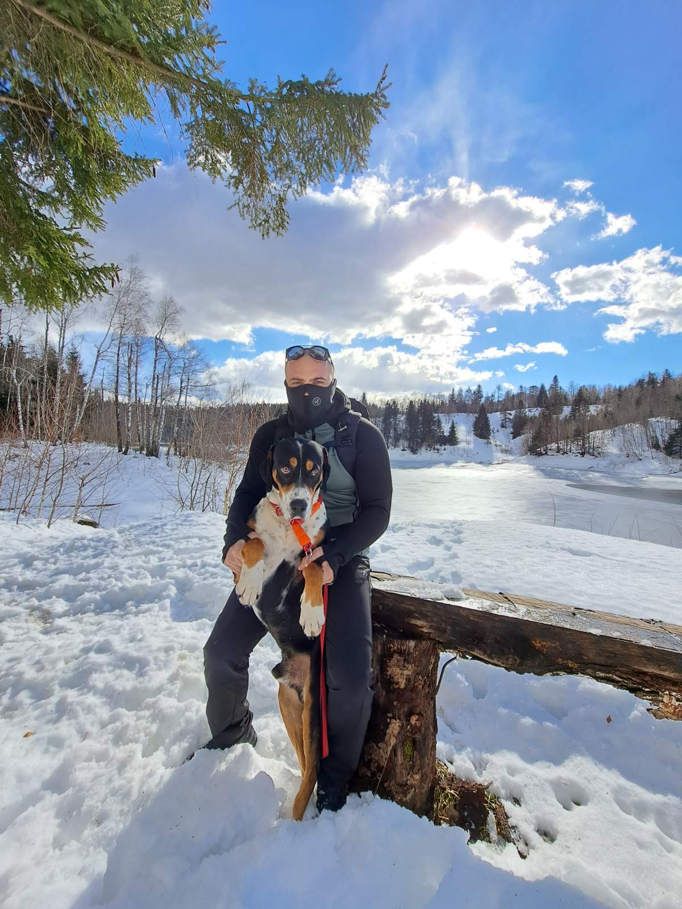

O meni
Moje ime je Darjan Juranović i student sam informatike u Puli. Trenutno radim kao poslovođa i operater CCTV inspekcije. Volim matematiku i skoro sve u vezi informatike 😊.
Vještine
Neke od vještina koje posjedujem su: fleksibilnost i prilagodljivost situaciji, kritičko razmišljanje i rješavanje problema, vođenje ljudi i organizacija posla te brzo učenje.
Obrazovanje
Prirodoslovno matematička gimnazija "Zvane Črnje" Rovinj, generacija 2009.